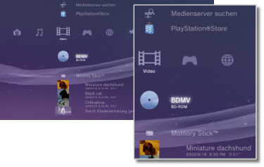

Video > Video-Kategorie
Video-Kategorie
Die folgenden Icons werden unter  (Video) angezeigt. Welche Icons angezeigt werden, hängt von den Nutzungsbedingungen ab.
(Video) angezeigt. Welche Icons angezeigt werden, hängt von den Nutzungsbedingungen ab.

 |
BD-Datendienstprogramm | Von Blu-ray Discs (BDs) verwendete Verwaltungsdaten werden gespeichert. |
|---|---|---|
 |
Medienserver suchen | Starten einer Suche nach DLNA-Medienservern im gleichen Netzwerk. |
 |
Medienserver | Herstellen einer Verbindung mit DLNA-Medienservern und Wiedergeben der dort gespeicherten Videodateien. Die eingeblendeten Icons hängen vom Typ des Servers ab. |
 |
PlayStation®Store | Anzeigen von Informationen aus dem PlayStation®Store. Dieses Icon wird nur in Ländern und Regionen angezeigt, in denen der Video-Store des PlayStation®Store verfügbar ist. |
 |
BD-ROM / BD-R / BD-RE | Wiedergeben einer Blu-ray Disc (BD). |
 |
DVD-ROM/DVD-R/DVD+R/DVD-RW/DVD+RW | Wiedergeben einer DVD oder einer AVCHD-Disc. |
 |
Daten-Disc | Wiedergeben von Videodateien auf kompatiblen, bespielbaren Disc-Datenträgern, wie z. B. auf einer CD-R oder DVD-R. |
 |
Memory Stick™ | Wiedergeben von Videodateien auf einem Memory Stick™-Datenträger.* |
 |
SD Memory Card | Wiedergeben von Videodateien auf einer SD Memory Card.* |
 |
CompactFlash® | Wiedergeben von Videodateien auf einem CompactFlash®-Datenträger.* |
 |
PSP™ (PlayStation®Portable) | Wiedergeben von Videodateien auf einem Memory Stick™-Datenträger eines PSP™-Systems. |
 |
PSP™ (PlayStation®Portable) | Wiedergeben von Videodateien im Systemspeicher des PSP™go-Systems. |
 |
Digitalkamera | Wiedergeben von Videodateien auf einer Digitalkamera, die mit dem PS3™-System kompatibel ist. |
 |
WALKMAN®/ATRAC Audio Device（WALKMAN®） | Wiedergeben von Videodateien, die auf einem WALKMAN®/ATRAC Audio Device (WALKMAN®) gespeichert sind. |
 |
ATRAC Audio Device | Wiedergeben von Videodateien, die auf einem ATRAC Audio Device gespeichert sind. |
 |
USB-Gerät | Wiedergeben von Videodateien auf einem USB-Massenspeichergerät. |
 |
Digitalkamera-Filme | Wiedergeben von Videodateien im Ordner DCIM eines Datenträgers. |
|
(Ordner) | Dieses Icon wird bei Ordnern angezeigt, die mit einem PC auf dem Datenträger erstellt wurden. |
 |
(auf der Festplatte gespeicherte Dateien) | Wiedergeben von Videodateien auf der Festplatte des PS3™-Systems. Dabei werden Miniaturbilder angezeigt. |
 |
(auf die Festplatte heruntergeladene Daten) | Dieses Icon wird bei auf die Festplatte heruntergeladenen Videodateien angezeigt. Beim Aufrufen werden die Daten installiert und die Videodateien können wiedergegeben werden. |
| * |
Bei einigen Modellen ist ein geeigneter USB-Adapter (nicht mitgeliefert) erforderlich, um Datenträger nutzen zu können. Wenn ein USB-Adapter verwendet wird, werden Datenträger als |
|---|
 (USB-Gerät) angezeigt.
(USB-Gerät) angezeigt.Anmerkungen
- Einzelheiten zu DLNA siehe
 (Einstellungen) >
(Einstellungen) >  (Netzwerk-Einstellungen) > [Verbindung mit dem Medienserver] in diesem Handbuch.
(Netzwerk-Einstellungen) > [Verbindung mit dem Medienserver] in diesem Handbuch. - Damit das System kopiergeschützte Blu-ray Discs mit einer Auflösung von 1080p ausgeben kann, muss es über ein HDMI-Kabel an ein Gerät angeschlossen werden, das mit dem HDCP-Standard (High-bandwidth Digital Content Protection) kompatibel ist.
- Bei einigen Typen kopiergeschützter Videodateien werden möglicherweise keine Miniaturbilder angezeigt.
- Bei einer BD, die durch die Kindersicherung gesperrte Inhalte enthält, ist die Wiedergabe entsprechend der am PS3™-System eingestellten Kindersicherungsstufe eingeschränkt. Die BD-Kindersicherungsstufe können Sie unter (Einstellungen) >
 (Sicherheits-Einstellungen) einstellen.
(Sicherheits-Einstellungen) einstellen. - Bei einer BD, die durch die Kindersicherung gesperrte Inhalte enthält, ist möglicherweise ein Passwort erforderlich, um die Inhalte wiederzugeben. Das Passwort können Sie unter (Einstellungen) > (Sicherheits-Einstellungen) einstellen.
- Durch die Kindersicherung gesperrte Inhalte werden als
 angezeigt. Sie können solche Inhalte durch Eingabe eines 4-stelligen Passworts wiedergeben lassen. Das Passwort können Sie unter (Einstellungen) > (Sicherheits-Einstellungen) einstellen oder ändern.
angezeigt. Sie können solche Inhalte durch Eingabe eines 4-stelligen Passworts wiedergeben lassen. Das Passwort können Sie unter (Einstellungen) > (Sicherheits-Einstellungen) einstellen oder ändern. - BDs mit Disc-Sperre werden mit
 gekennzeichnet. Wenn Sie Inhalte auf solchen Discs wiedergeben wollen, geben Sie das Passwort ein, das vom Hersteller der Disc definiert wurde.
gekennzeichnet. Wenn Sie Inhalte auf solchen Discs wiedergeben wollen, geben Sie das Passwort ein, das vom Hersteller der Disc definiert wurde. - Leihinhalte, die vom Video-Store des PlayStation®Store heruntergeladen wurden, werden als
 angezeigt.
angezeigt. - In seltenen Fällen kann es vorkommen, dass Discs und andere Datenträger auf dem PS3™-System nicht einwandfrei wiedergegeben werden. Dies ist hauptsächlich auf Abweichungen im Herstellungsverfahren oder bei der Software-Codierung zurückzuführen.
- Wenn ein Gerät, das nicht mit dem HDCP-Standard (High-Bandwidth Digital Content Protection) kompatibel ist, über ein HDMI-Kabel an das System angeschlossen wird, können Bild und/oder Ton nicht vom System ausgegeben werden.
Blu-ray Disc (BD) lokaler Speicher
Wenn während der BD-Wiedergabe eine Fehlermeldung angezeigt wird, dass der lokale Speicher nicht ausreichend ist, löschen Sie nicht benötigte Dateien auf der Festplatte, um den freien Speicher zu erhöhen.
Der lokale Speicher ist der Datenspeicherbereich, der in den Standards BD-ROM Profil 1.1 / 2.0 definiert ist. Diese Daten werden auf der Festplatte des PS3™-Systems gespeichert.